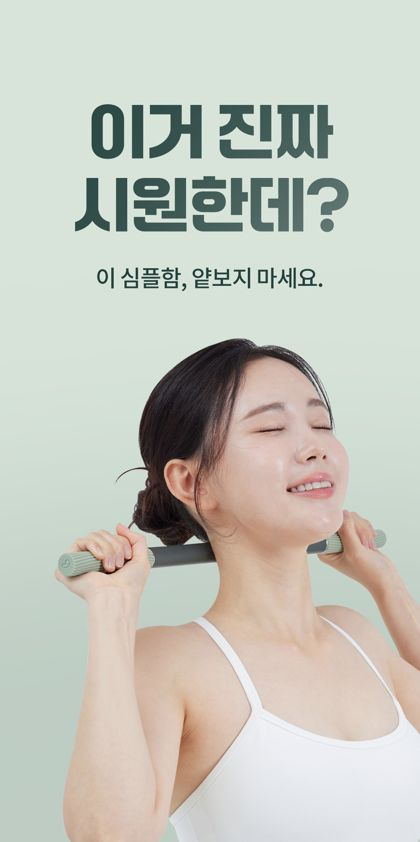
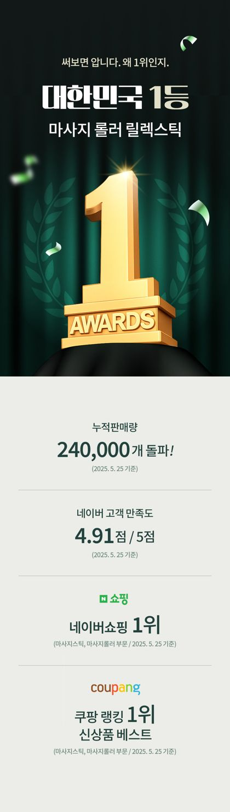
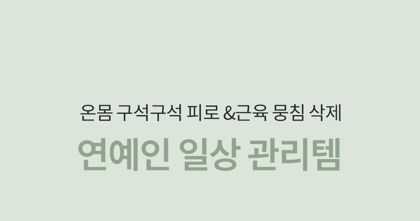
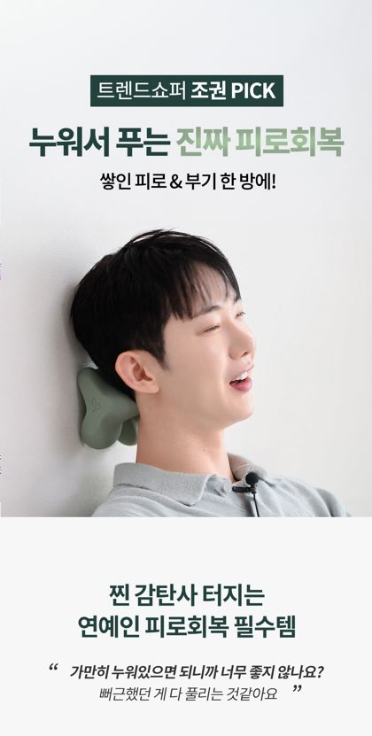
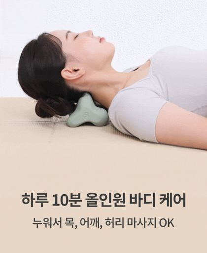
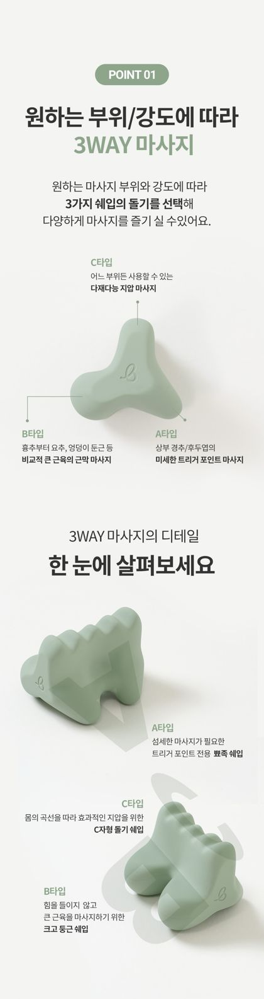
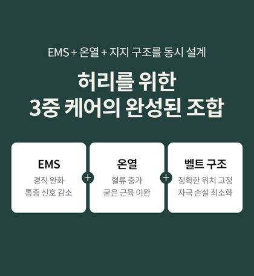
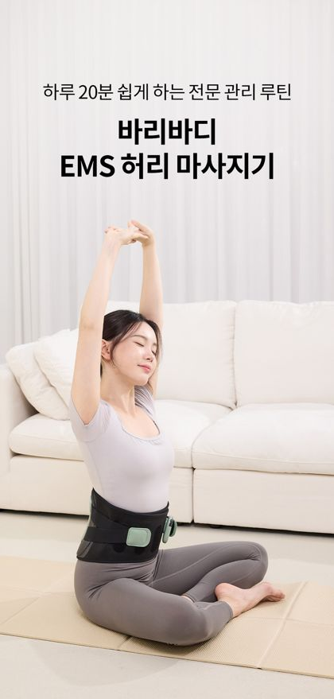
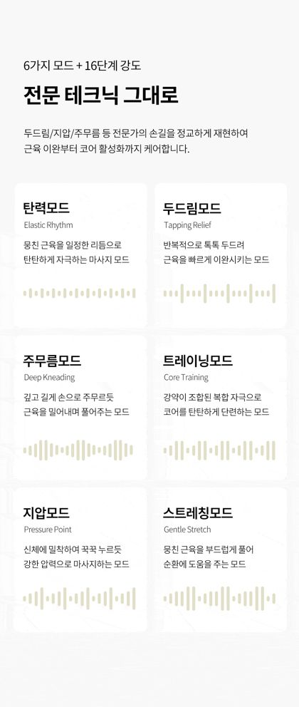

BARYBODY · ACTION PLAN
바리바디 상세페이지 개선 처방
잘 만든 벤치마크 14개 평균과 우리 4종을 같은 10요소 기준으로 비교해, 제품별로 무엇을 더하고 어떤 순서로 고칠지 정리했습니다. 공식 원리는 「좋은 상세페이지 공식」 문서를 함께 보세요. · 2026-06-04
목차
1. 한 장 요약 — 우리는 지금 어디에
잘하고 있다: 기능/구조 설명(평균 43% — 벤치 37.6%보다 충실), 신뢰 요소(16% — 벤치 13%), 사용가이드까지 "제품을 제대로 설명하는" 기본기는 상위권. 업계 검증된 공통 포맷(Check 넘버링·전문가 검증·3중 설계·온열 단계)도 정확히 따르고 있음.
아쉽다 (개선 핵심 3가지):
① 상단 퍼널이 얇다 — 후킹·문제제기·USP가 벤치보다 적다. 특히 손목은 USP 0장, 허리는 후킹·문제·USP 각 1장뿐.
② 효과 "증명"이 약하다 — 연출컷(모델 사진)은 많지만(18%) before/after·수치·만족도 같은 객관적 증명이 거의 없다.
③ 디자인 컷 0장 — 4종 모두. 보이는 곳에 두는 제품인데 디자인 소구가 없다.
① 상단 퍼널이 얇다 — 후킹·문제제기·USP가 벤치보다 적다. 특히 손목은 USP 0장, 허리는 후킹·문제·USP 각 1장뿐.
② 효과 "증명"이 약하다 — 연출컷(모델 사진)은 많지만(18%) before/after·수치·만족도 같은 객관적 증명이 거의 없다.
③ 디자인 컷 0장 — 4종 모두. 보이는 곳에 두는 제품인데 디자인 소구가 없다.
2. 데이터 비교 — 우리 4종 vs 벤치마크 14개 평균
"페이지에서 각 요소가 차지하는 평균 비중(%)". 빨강=벤치보다 부족, 초록=벤치 이상.
| 요소 | 벤치 평균 | 바리바디 평균 | 진단 |
|---|---|---|---|
| 기능/구조 | 37.6% | 43.1% | 충실(다소 과함) |
| 효과/연출컷 | 7.8% | 18.4% | 많음 — 단 연출컷 위주, 증명 부족 |
| 신뢰(인증/AS) | 13.1% | 16.3% | 강점 |
| 사용가이드 | 3.6% | 4.9% | 좋음 |
| 핵심가치/USP | 6.5% | 5.0% | 부족(손목 0) |
| 후킹/인트로 | 6.0% | 3.5% | 부족 |
| 구매정보/스펙 | 7.9% | 3.6% | 부족(FAQ·스펙 가벼움) |
| 문제제기/타겟 | 5.6% | 3.1% | 부족 |
| 디자인 | 1.3% | 0% | 전무 |
| 매장공통/고지 | 10.6% | 2.2% | 자사몰이라 낮음(정상) |
제품별 요소 장수(절대값)
| 제품 | 총 | 후킹 | 문제 | USP | 기능 | 효과/연출 | 신뢰 | 디자인 |
|---|---|---|---|---|---|---|---|---|
| 릴렉스틱 | 71 | 3 | 2 | 6 | 28 | 14 | 10 | 0 |
| 올인원 | 42 | 2 | 2 | 4 | 12 | 10 | 7 | 0 |
| 손목 | 35 | 1 | 1 | 0 | 16 | 5 | 8 | 0 |
| 허리 | 51 | 1 | 1 | 1 | 30 | 8 | 6 | 0 |
3. 공통 강점 / 공통 약점
✅ 공통 강점 (유지)
- 기능 설명력 — 모드·온열 단계·3중 설계·소재·구조를 단계(Check)로 충실히. 벤치 상위권.
- 신뢰 자산 — 사칭주의·공식판매·국대 트레이너/물리치료사 검증·KC인증·1년 무상 A/S·100% 환불. 특히 릴렉스틱은 백화점·올리브영 입점, "대한민국 1등"까지 확보.
- 사용가이드 — 부위별/테크닉별 가이드, 사용법 STEP. 활용도(=만족도) 소구가 좋다.
⚠️ 공통 약점 (개선)
- 상단 퍼널(후킹·문제·USP)이 얇다 — 기능으로 너무 빨리 직진. 고객이 "내 얘기네 → 그래서 이게 답"이라는 감정 단계를 건너뛴다.
- 효과 증명이 연출컷에 의존 — 모델이 쓰는 사진은 많지만 "써보니 이렇게 달라졌다"는 전후·수치·만족도가 없다. (리칼지메디는 효과 증명만 16장)
- 디자인 소구 0 — 컬러·인테리어 어울림 컷이 4종 모두 없음.
- 구매정보(FAQ·스펙)가 가볍다 — 구매 직전 의심 해소 FAQ를 더 두껍게.
4. 제품별 처방
종합 A− · 가장 잘 된 페이지
후킹 "이거 진짜 시원한데?" 신뢰 "대한민국 1등" USP "연예인 일상 관리템"
릴렉스틱 (마사지 롤러) · 71장
현 구성: USP 6 · 신뢰 10 · 효과/연출 14 · 기능 28 — 균형이 가장 좋다. 셀럽 PICK·백화점/올리브영 입점·"대한민국 1등"으로 후킹·신뢰가 탄탄.



처방 1. 효과 14장이 대부분 연출컷 → "1개월 후 승모근 변화" 같은 before/after·만족도 설문 1~2장을 증명형으로 보강.
처방 2. 디자인 0 → 컬러/그립/인테리어 어울림 1컷(미니멀 디자인 소구).
처방 3. 구매정보 2 → FAQ에 "폼롤러와 뭐가 다른가/사이즈 어떤 걸/아프지 않나" 추가.
보강 카피 예시 (효과 증명)"릴렉스틱 2주, 사용자 92%가 '뭉침이 줄었다'고 답했어요" + 사용 전/후 종아리 라인 비교컷
종합 B · 무난, 상단·증명 보강
후킹 "조권 PICK" USP "하루 10분 올인원" 기능 "3WAY 마사지"
올인원 마사지기 · 42장
현 구성: 후킹 2(조권 PICK) · 문제 2 · USP 4 · 기능 12 · 효과/연출 10. 동작별(경추/요추/림프절) 설명이 강점.



처방 1. 문제제기 확장 → "거북목·라운드숄더·하루종일 앉아있는 당신" 등 타겟 호명 2~3장으로 공감 강화.
처방 2. 효과 증명 → "10분 후 자세/근막 변화" 시각화, 후기 평점(4.9) 외에 전후 체감 데이터 1장.
처방 3. 디자인 1컷 + FAQ 보강("얼마나 자주? 아프지 않나?").
보강 카피 예시 (문제제기)"하루 8시간 앉아있는 당신, 퇴근 후 목·허리가 돌덩이처럼 굳지 않나요?"
종합 C+ · 개선 1순위

신뢰 "물리치료사 검증"(강점) 
인트로 바로 제품으로 직진 
기능 "3중 자극"(USP 카피는 부재)
손목 마사지기 (EMS/TENS/온열) · 35장
현 구성: 후킹 1 · 문제 1 · USP 0 · 기능 16 · 신뢰 8. 기능·신뢰(물리치료사 검증·KC)는 좋지만 "왜 사야 하는지"의 감정·차별 설득이 비어 있다. 바로랩 손목(동일 카테고리)은 후킹·문제·특허 후기로 상단을 두껍게 깐다.
처방 1 (필수). USP 한 줄 신설 — "손목 전용으로 설계된 TENS·EMS·온열 3중 케어"를 도입부에 한 장으로 박기.
처방 2 (필수). 문제제기 2~3장 확장 — 손목 통증 타겟 호명(스마트폰·마우스·육아맘·필기 많은 학생), "방치하면 만성" 공감.
처방 3. 후킹 강화 + 효과/후기 보강(현재 효과 5장은 연출 위주) + FAQ/스펙 1장.
보강 카피 예시 (USP + 후킹)후킹 "하루 6,000번 꺾이는 손목, 케어하고 계신가요?"
USP "마사지건으로 닿지 않던 손목, 손목만을 위해 설계한 EMS·TENS·온열 3중 케어"
USP "마사지건으로 닿지 않던 손목, 손목만을 위해 설계한 EMS·TENS·온열 3중 케어"
종합 B− · 상단 퍼널 보강
설계 "3중 케어"(상단 빠르게 기능化) 제품 인트로 기능 "6모드 16강도"(기능 30장)
허리 마사지기 (EMS 벨트) · 51장
현 구성: 후킹 1 · 문제 1 · USP 1 · 기능 30 · 신뢰 6. 기능(EMS·온열 3단계·인체공학 구조)이 매우 충실하나 상단이 거의 곧장 기능으로 직진. 기능 30장 일부는 그룹핑으로 압축 가능.



처방 1. 문제제기 확장 — "오래 앉는 직장인·운전자·서서 일하는 분"의 허리 통증 상황 2~3장(현재 '이런 경험' 1장만).
처방 2. USP 한 줄 + N가지 핵심 포인트 요약 1장(EMS·온열·지지 3중을 도입부에서 먼저 선언).
처방 3. 효과 증명 — 착용 전/후 자세·통증 만족도, 전문가(국대 트레이너) 멘트를 데이터화.
처방 4. 기능 30장 → "EMS / 온열 / 지지구조" 3블록으로 묶어 가독성↑(현재는 흐름이 길게 늘어짐).
보강 카피 예시 (USP 요약)"허리를 위한 3중 케어 — ① EMS 통증 신호 완화 ② 3단계 온열 이완 ③ 인체공학 지지로 바른 자세까지"
5. 우선순위 액션 플랜
| 순위 | 액션 | 대상 | 기대 효과 |
|---|---|---|---|
| 1 | USP 한 줄 + 문제제기 2~3장을 모든 페이지 상단에 신설 | 손목·허리 먼저 → 전 제품 | "왜 사야 하는지" 설득력 ↑ (이탈률 ↓) |
| 2 | 효과 "증명" 컷 1~2장(전후·만족도·간이 실험) | 전 제품 | 연출컷→증명으로 확신 ↑ (전환율 ↑) |
| 3 | FAQ·구매정보 보강(구매 직전 의심 해소) | 전 제품 | 문의↓·반품↓·안심 ↑ |
| 4 | 디자인 1컷(컬러·인테리어 어울림) | 전 제품 | 보이는 제품 소구·선물 수요 |
| 5 | 허리 기능 30장 3블록 그룹핑으로 압축 | 허리 | 가독성·완독률 ↑ |
한 줄 결론: 우리는 "기능·신뢰는 잘하는데, 상단에서 마음을 먼저 잡는 단계(후킹·문제·USP)와 효과 증명이 약한" 전형. 페이지를 새로 만들 필요 없이 상단에 5~7장을 더하고, 효과 증명 1~2장을 끼우는 것만으로 벤치마크 수준에 도달한다. 손목·허리부터.